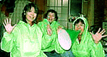
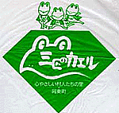
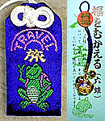
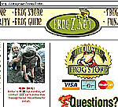

|
選挙で生まれたカエル教！ 【大阪発=吹田学保連様】私たちは吹田の学童保育運動の団体なのですが、先日の大阪府知事選挙の時、応援のコスチュームが緑のヤッケだった事もあり「カエル教」と命名して遊んでいました。雨の中、250軒参りの行や練り歩きの行など数々の修行をこなし4.5秒毎に呪文を唱える為に、口も緑色のメガホンに進化していました。で、選挙が終わり女性陣は少し退化し始めた時の写真ですが応募させていただきます。こんなんで良かったら笑ってください。(^^; ＃オタマジャクシ足（蛇足）...先日小豆島を訪れましたが、行く先々でカエルの石像が。。。。土産物屋さんの包装紙にもカエルのマーク。。。カエルとの関係ってご存じですか？
ΘΘ 吹田学保連 ( ｖ ) Team KAERU【全国かえる奉賛会】選挙戦は、無念の敗北だったそうだが、次回は最初から完全カエルコスプレで展開すれば当選は約束されたも同然だ！しっかし、応援する候補者が落選した以上は、日頃からカエルコスチュームに身を包み、げこげこ大王７世の親衛隊として再結成してほしいぞ。 独自のカエル大行進をやってほしいぞ！そのうちに、げこげこ大王７世が、選挙で日本国王位についた暁には、全国かえる奉賛会カエラー翼賛親衛隊として再編成して過激なカエルパレードを組織してほしいー！今後も活動報告をお待ちしています。 博多どんたくパレードにも出場してほしいなー。
山口『三匹のカエル』で買い物を！ 【岡山発=けろけろ同志記者】山口県に「三匹のカエル」というお土産屋さんがありますので紹介します。「三匹のカエル」は、阿東町特産のりんごをはじめ、梨やメロン、まつたけやわさびが店狭しと並ぶお土産やさんです。詳しくはけろけろのホームページで特集していますので見てください。ぜひともカエル奉賛会指定お土産屋さんにしてほしいものです。
ひな人形しか作ってないのかと思ってましたが、ぬいぐるみも作ってたんですね。色が何色かあって、どれにしようか大変迷いましたが決められず、とうとう５色（黄、桃、オレンジ、青、水色）全部買ってしまいました。ｈｐを見ると、ライム色もあるようです。画像が小さめですが、本物はなかなかのものです。とても気に入っています！
【全国かえる奉賛会】おおー。どんなに駄作であろうとも、カエルが出ていれば、それでいいのだああああ。

【全国かえる奉賛会】銀閣寺カエル守りって、こんなに剽軽（ひょうきん）でいいのかあああ。でもステキだ。今度は京都にいったら、銀閣寺にいってみる。

でも、今回は、通常のサボテンスタイルとともに、携帯ストラップとポストカード４枚組みが発売しています。けろテン市場にイマスグ行こう。
|
かえる古新聞過去に取り上げた記事を見出し付きで一覧したい人は、ここをクリック◆創刊号を見る◆先週号を見る◆話題の号を見る◆かえる新聞の昔を読む
|
私も入っています。。全国かえる奉賛会
大王様に会うには、このバナーをクリック。ずっと奥に写真館があるぞ。全国かえる奉賛会に入会するには、自分のホームページのどこかに、下の部分を追加するとバナーがリンク付きで表示されるぞ。どんどん入会しましょー |


|